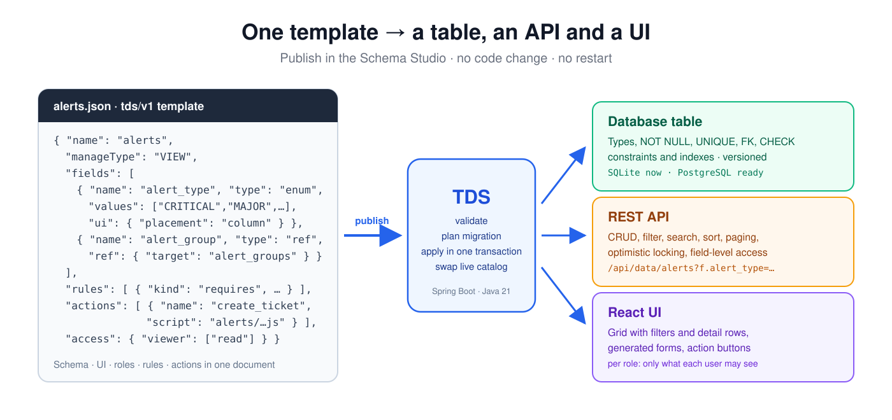
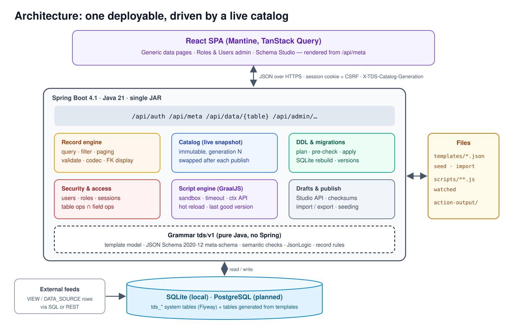
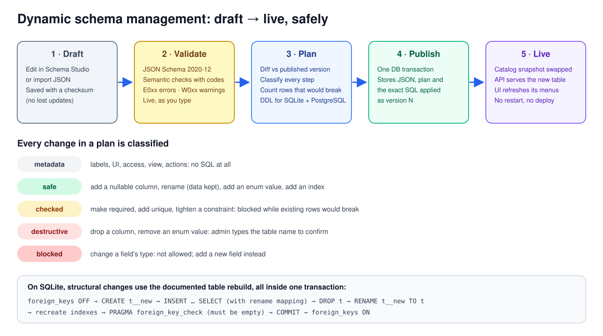
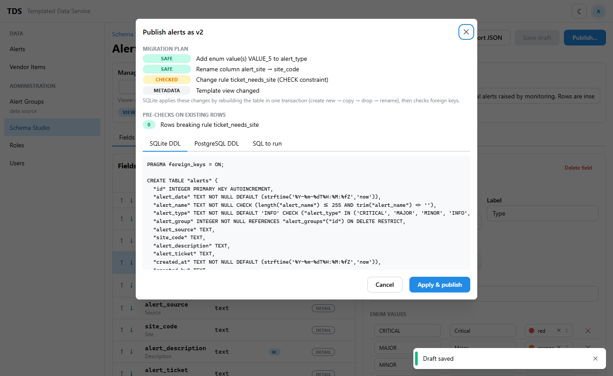
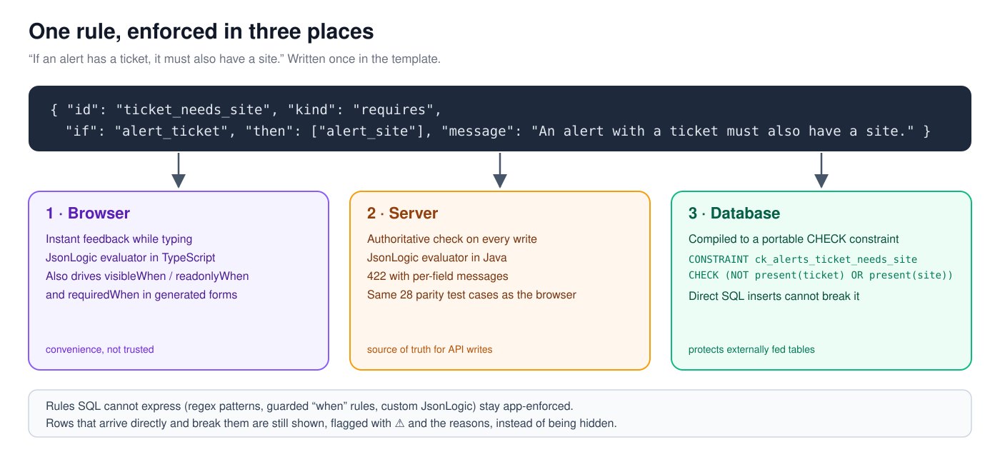
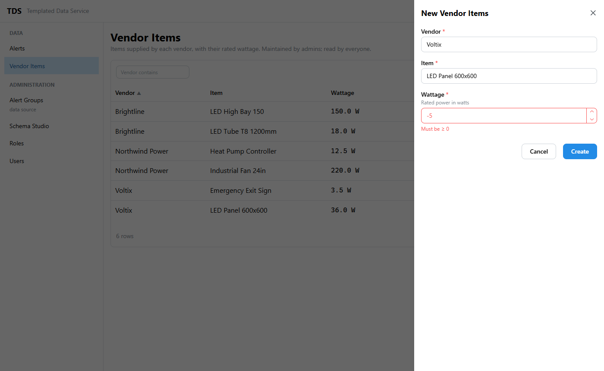
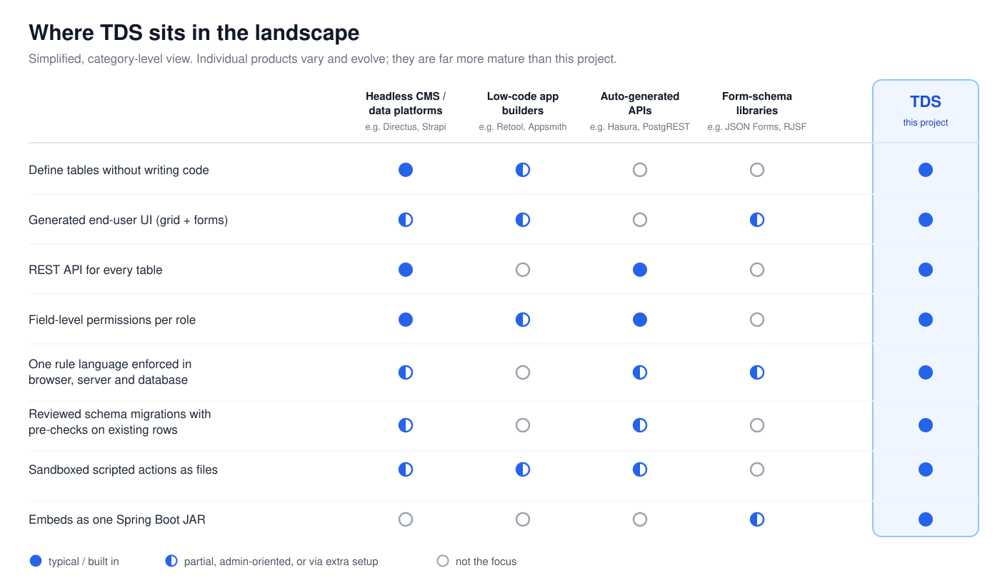

One JSON template, a live table, API and UI
Templated Data Service (TDS) is an open-source data service. Define a table, its UI, role permissions and actions in one JSON template. TDS creates the database table, a REST API and a React UI for it, with no code change and no restart.

What you get
New tables in minutes
Define fields, rules and access in the Schema Studio, press Publish, and the table, its API and its screens are live.
No restart, no redeploy
Publishing swaps an in-memory catalog. Open browsers pick up the change on their next request.
One source of truth
The same template drives the DDL, the REST API, server validation, the generated forms and the grid, so they cannot drift apart.
Safety built in
Constraints live in the database too. Schema changes are classified, existing rows are checked first, and each version keeps the SQL it ran.
Security by default
Permissions per role, narrowed per field. Fields a user cannot read never leave the server.
Behaviour without redeploying
Row actions run JavaScript files in a GraalJS sandbox, hot-reloaded when the file changes.
Architecture
One Spring Boot JAR serves the REST API and the React app. Requests read an immutable catalog of published templates; a publish builds a new catalog and swaps it in after the database transaction commits, so changes go live without a restart. SQLite is used today, with the SQL kept portable for PostgreSQL.

Schema changes reviewed like code
Drafts are validated against the template grammar. Publishing shows a migration plan with every step classified (metadata, safe, checked, destructive or blocked), counts the existing rows each risky step would break, and previews the DDL for SQLite and PostgreSQL. Each publish runs in one transaction and is stored as a new version.


One rule, three enforcement points
A rule is written once in JsonLogic. It runs in the browser for instant feedback, on the server as the authority, and, where SQL can express it, as a database CHECK constraint, so even direct inserts from an external feed cannot break it. The Java and TypeScript validators share the same test vectors.


Where it fits
Headless CMSs, low-code builders, auto-generated API layers and form-schema libraries are excellent and far more mature than this project. TDS borrows ideas from all of them and combines them differently: one versioned document holds storage, UI, permissions, rules and actions; every table declares how its data arrives (VIEW, MANAGE_VIEW or DATA_SOURCE); and schema changes are planned and pre-checked before they run.

Try it
Needs JDK 21 and Maven 3.9+. The dev profile publishes the example tables and loads sample rows.
git clone https://github.com/aishwaryajayanth1820-git/templated_data_service.git
cd templated_data_service
mvn -Pui verify
export TDS_ADMIN_PASSWORD=change-me-now-1
java -jar target/templated-data-service-0.1.0-SNAPSHOT.jar --spring.profiles.active=dev
# open http://localhost:8080 and sign in as adminThe README lists what to try: a read-only alerts grid with a ticket action, a vendor items table with validation, an admin data browser, roles and users, and the Schema Studio.
Questions
- What is a template?
- A JSON document in the
tds/v1grammar that describes a table's fields and types, the UI placement of each field, role and field permissions, cross-field rules and scripted actions. A JSON Schema meta-schema validates it, and every publish stores a new version. - Which databases does it support?
- SQLite today. The SQL dialect and DDL for PostgreSQL are in place; running on PostgreSQL is the next milestone.
- Is it production-ready?
- It is an early project (version 0.1). The development plan in the repository lists the milestones and the known gaps.
- Is it free to use?
- Yes, under the Apache License 2.0, including commercial use. If you build on it, keep its NOTICE file and credit the project.